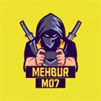

Düz kart
Bilgi göstermek için kullanılan kart. Görsel, rozet, başlık, açıklama ve etiketler içerebilir.
Faz 1
Sitenin bütün yapı taşları bu sayfada. Sağ üstten temayı ve dili değiştirerek görünümü kontrol edebilirsin.
--bg--surface--border--text--text-muted--yellow--purple--purple-deepOxanium · Manrope · IBM Plex Mono
Gövde metni: Türkçe karakter testi — ğüşıöç ĞÜŞİÖÇ. Oyun ve teknoloji tutkusuyla her gün yeni bir şey üretiyorum.

Bilgi göstermek için kullanılan kart. Görsel, rozet, başlık, açıklama ve etiketler içerebilir.
Üzerine gelince hafifçe yükselir ve mor parlar. Ana sayfadaki bölüm kartları böyle olacak.
YakındaKartlar ekran genişliğine göre otomatik olarak yan yana veya alt alta dizilir.
Sahne açık temada da koyu kalır; neon görünüm markanın parçası.